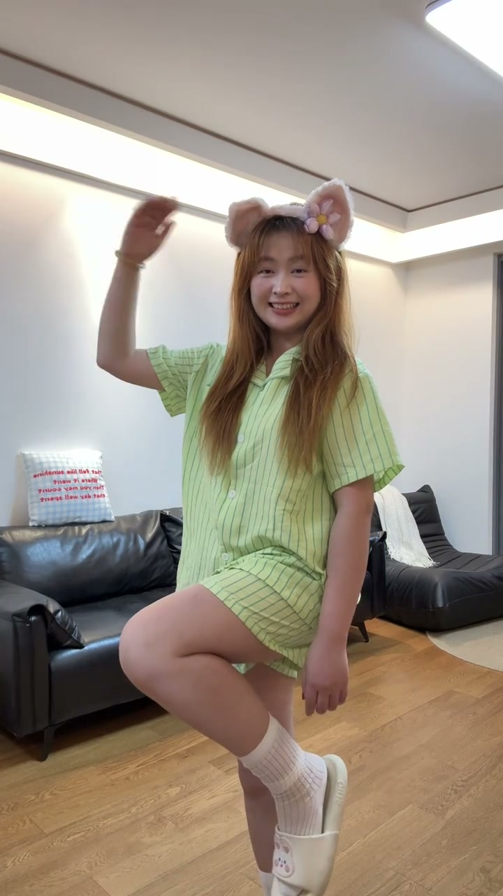
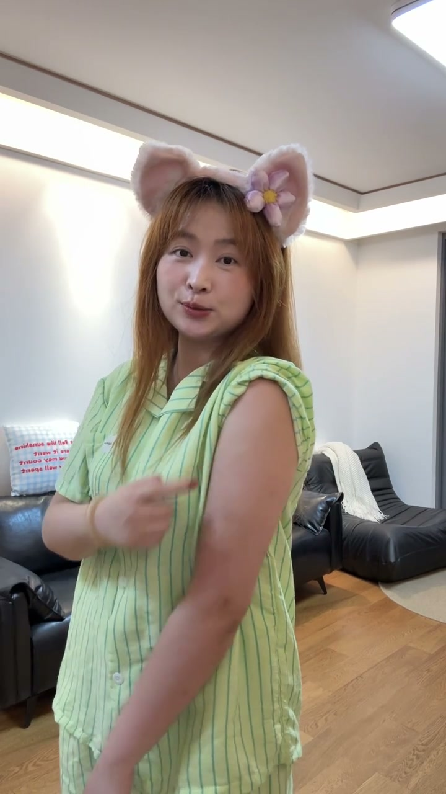
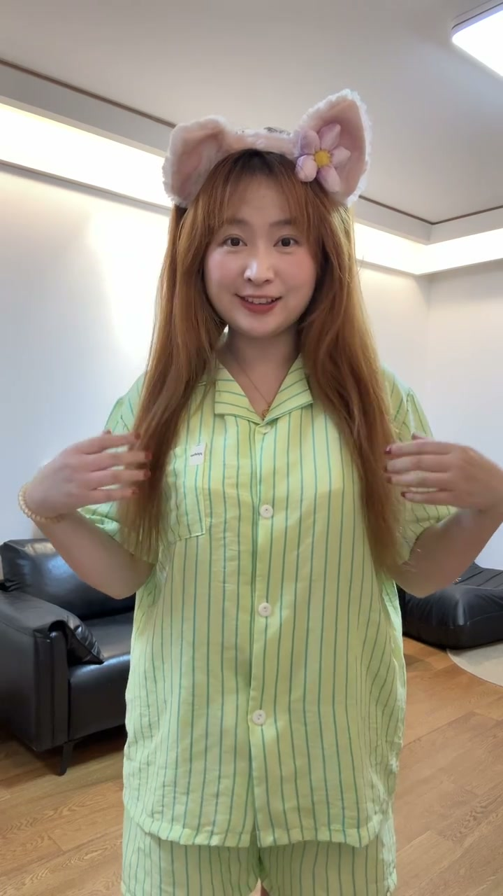
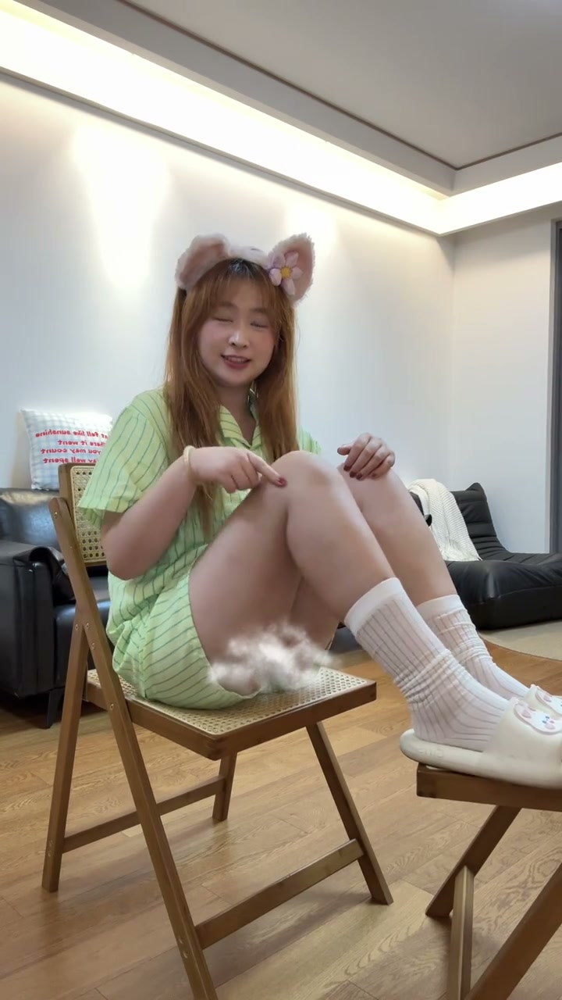
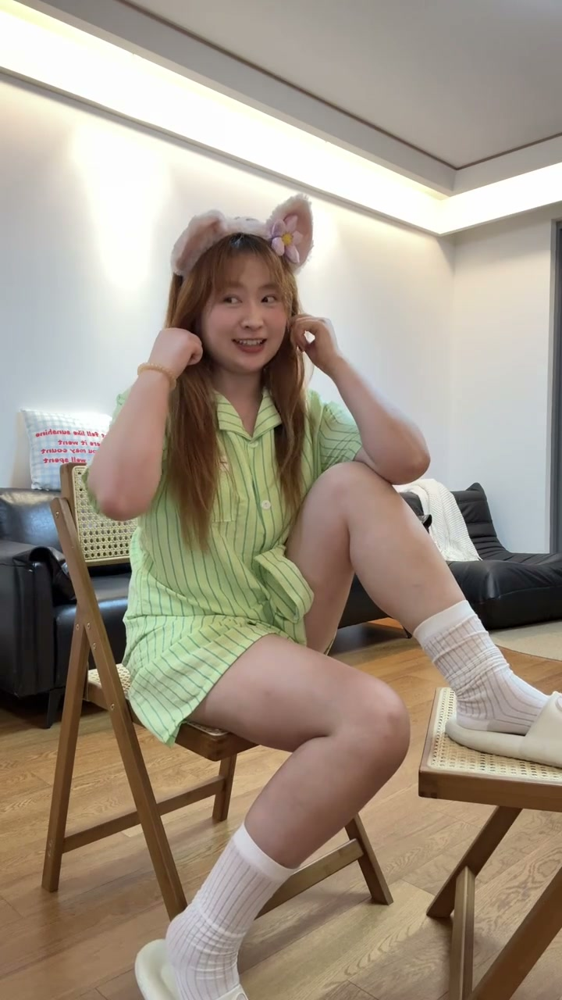
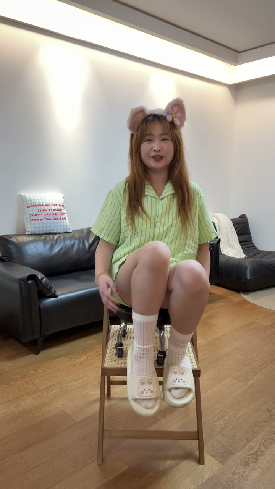

姿势1：三角构图+不经意抬头
00:00一个三角形，两个三角形——手臂、腿折出三角形的线条，然后不经意的抬头看镜头/看远方。三角形构图让画面稳、有节奏，抬头瞬间最松弛。

姿势2：叉腰露项链
00:04如果侧身站/转身站显胳膊粗，那就抬起胳膊伸到腰（叉腰），然后露出项链——既遮住粗臂，又用项链把视线引到锁骨和脸。

姿势3：背影撩发露肩颈
00:10拍背影的时候，要把所有头发都放到前面——这样做的目的：肩颈线条可以露出来，背影才不臃肿、有线条感。

姿势4：肩带滑落+托腮
00:15如果想露肩颈又怕显肉：把外侧的肩带放下来，用衣服挡住里侧的肉肉，然后托住腮帮来一张——一侧露肩、一侧挡肉，又松弛又显瘦。

姿势5：假戴耳机，身体前倾
00:23还可以假装戴耳机来一张。注意：不是僵硬的摆拍，而是做出戴耳机的动作，同时身体向前倾——有日常感、有故事感，松弛又自然。

姿势6：一脚点地一脚半曲
00:30动作幅度大的时候：一条腿自然点地，另外一条腿放到一半（微微半曲）——这样腿显得很长（垂感好），而且接下来做什么动作都很自然，不会僵住。

每条腿、每根头发、每条肩带都有设计，但看起来毫不费力——这就是韩系松弛感。